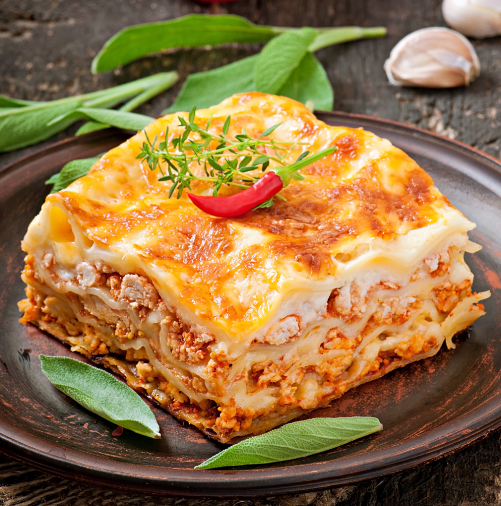

Lasagna

Description
Lasagna is a classic Italian oven-baked pasta dish made by layering wide,
flat pasta sheets with savory sauces,
meat or vegetables, and cheese.
Ingredients
- 1 lb ground beef
- 1 diced onion, 2 minced garlic cloves
- 1 can (15-28 oz) crushed tomatoes
- 1-2 cans tomato sauce
- 1-2 tbsp tomato paste
- 1-2 tbsp extra virgin olive oil
- 1 tsp dried basil
- 1 tsp dried oregano
Steps
- Cook 1 pound of ground beef or a mix of beef and Italian sausage in a large skillet over medium heat with a diced onion and minced garlic until browned. Drain the excess fat.
- Stir in crushed tomatoes, tomato sauce or paste, and seasonings (basil, oregano, salt, pepper, and a pinch of sugar). Simmer for 15 to 30 minutes until thick.
- In a medium bowl, combine ricotta or cottage cheese, grated Parmesan, an egg, and a portion of the shredded mozzarella. Season with a little salt and pepper.
- Prep the pan: Preheat your oven to 375°F (190°C). Spread a thin layer of meat sauce on the bottom of a 9x13-inch baking dish so the noodles do not slide.
- First layer: Place a single layer of lasagna noodles (cooked al dente or oven-ready) across the bottom.
- Add fillings: Spread a portion of the cheese mixture over the noodles, then top with a layer of meat sauce and a sprinkle of mozzarella.
- Repeat: Repeat the layers (noodles, cheese mixture, meat sauce, and mozzarella) 2 to 3 times until you reach the top of the dish.
- Finish the top: End with a final layer of noodles, a thin layer of sauce, and a generous topping of mozzarella and Parmesan cheese.
- Bake: Cover the dish tightly with aluminum foil and bake at 375°F for about 25 to 40 minutes (remove the foil for the last 10 minutes if you want a browned, bubbly top).
- Let the lasagna rest for 10 to 15 minutes before slicing and serving so the layers hold their shape.
Home